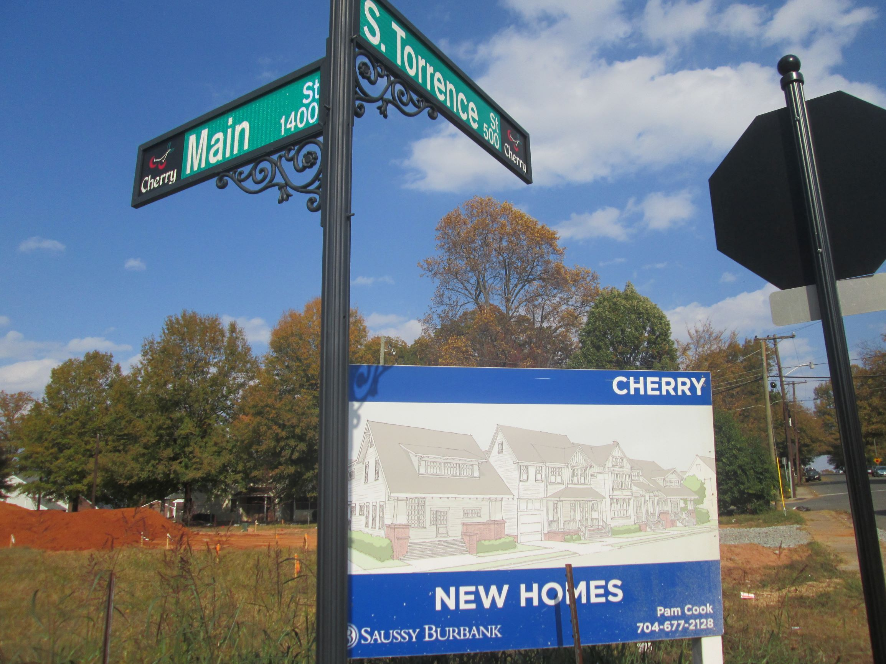
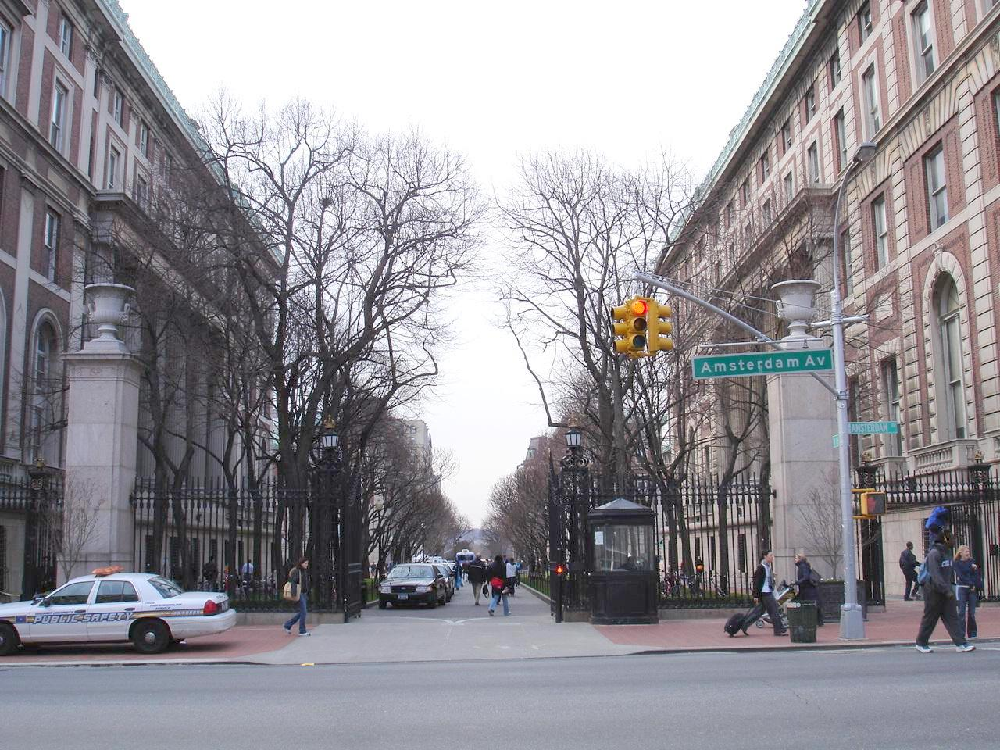

Carlyle was born and raised in Charlotte, North Carolina. With a deep reverence for traditional Southern hospitality but a lack of the characteristic accent, he cites his upbringing in the “New South” as a major influence on his interests in social justice and urban development. Carlyle is a proud graduate of Myers Park High School, a nationally-regarded public school that was also attended by his grandmother. There he obtained his International Baccalaureate Diploma, graduating in the top 3% of his class of over 700 students.
Carlyle is a life-long sports fan, especially of the Carolina Panthers football team. Like many modern statisticians, he sources his interest in statistics to a desire to be able to predict the outcome of sports games given information about the teams and players participating. Throughout his childhood, he ran upwards of five ‘fantasy football’ teams a season, spending hours looking at players’ prior performances in order to craft the perfect team. His fascination with predictions also translated to politics, as newspaper coverage leading up to the 2008 and 2012 presidential elections inspired him to try and predict how certain states would ‘swing’.
During his eighteen years of living in Charlotte, Carlyle was able to watch his hometown grow exponentially in both population and size. Witnessing the process of gentrification on a nearby neighborhood led him to questioning the negative implications of this unprecedented growth, as he watched long-time residents forced out of the neighborhood by rising land taxes and new development. In his sophomore year of high school, Carlyle used list price information obtained from the Mecklenburg County Registrar of Deeds and newspaper reports from the archives of his local library system to construct a photographic report that exposed a ‘bait and switch’ operation on the part of some of developers within the area. These developers would make promises to the city and local community to include low-income housing in order to get favorable rezoning policies and purchasing power, and then neglect to follow through on this commitment. The report also featured crudely created maps put together using Google Maps and Microsoft Paint, Carlyle’s first venture into statistical cartography. This project was one of many that helped kindle his interest in using data to achieve a more sustainable, equitable form of urban growth.
Over the next few years, Carlyle stepped back from his research to focus on developing his technical skills. He taught himself QGIS mapping software and the R statistical programming language. He became interested in machine learning and predictive modeling, taking online coursework on modeling in R and Python. These new skills were invaluable in completing the capstone project of his International Baccalaureate Diploma, a research paper focused on evaluating the socioeconomic effects of a commuter rail system in the Charlotte Neighborhood of South End.
Attracted by its dedicated major to statistical social science research and ambitious student body, Carlyle committed to Columbia University and moved to the Upper West Side in New York City, where he currently resides. At Columbia, Carlyle currently sits on the editorial board of the Journal of Politics and Society, a research journal publishing extraordinary social science research by undergraduates from around the world. He is also in the onboarding process for a Research Assistant position within Columbia’s Economics Department.
In his free time, Carlyle is an avid Yelper and owner of a scented candle review blog. He is passionate about theatre and music, thoroughly enjoying the availability of high-quality performances in his new home. He is a frequent reader of FiveThirtyEight and Andrew Gelman’s statistical social science blog. On a typical Friday Night, you’ll probably find him discovering new artists on Spotify and debating his friends about politics.